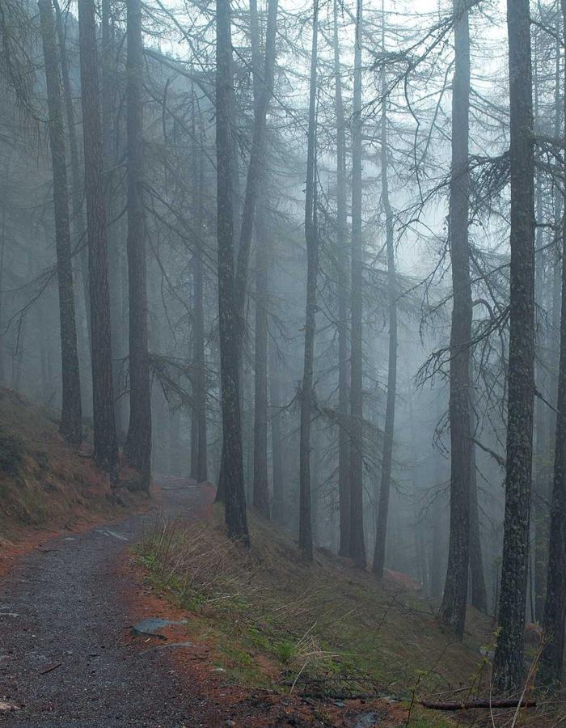
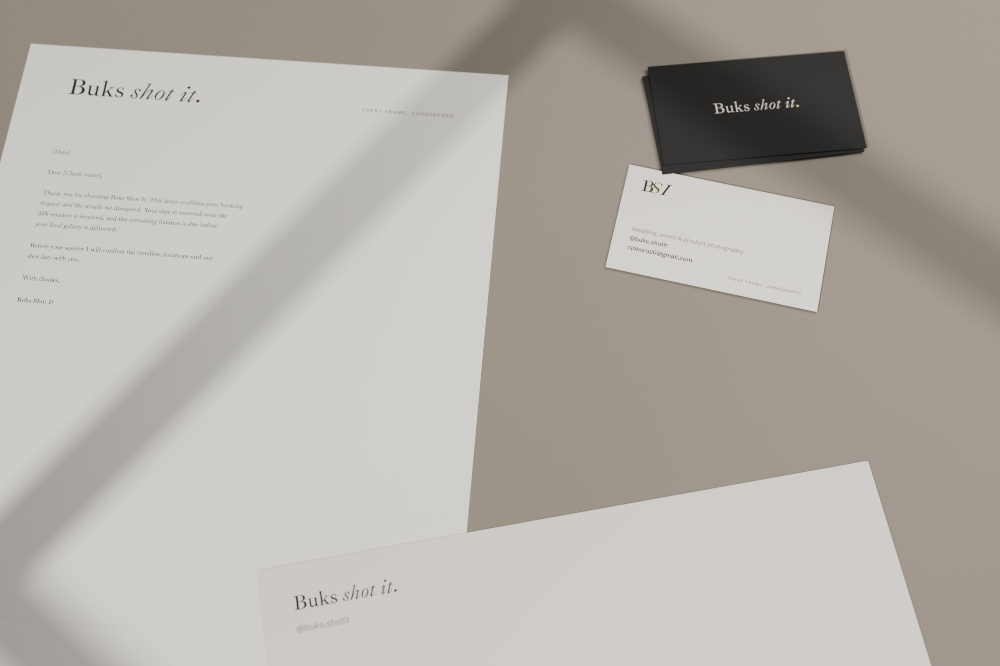
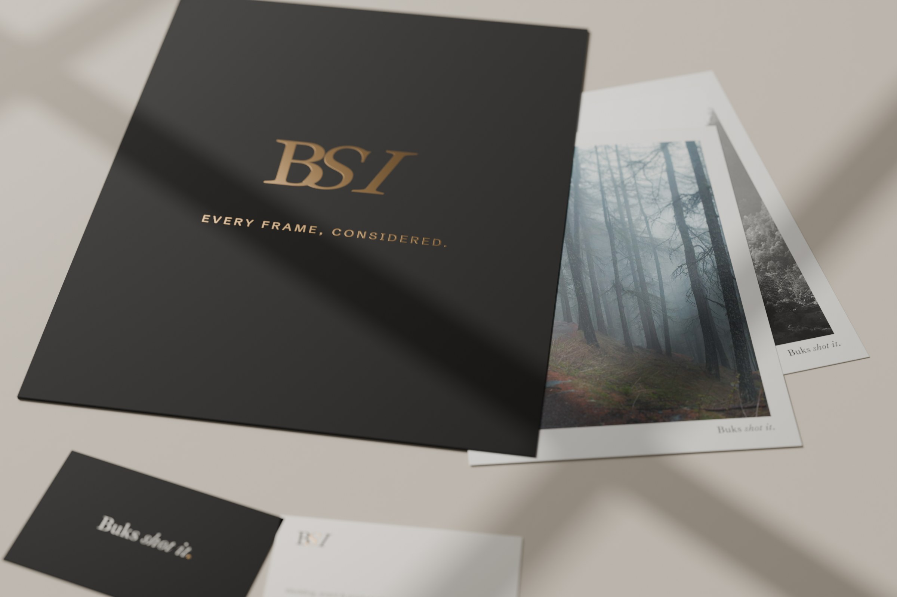

<title>Buks Shot It Brand Guidelines</title>
<meta name="claude:viewport-fit-sides" content="cover">
<link rel="stylesheet" href="https://fonts.googleapis.com/css2?family=Ibarra+Real+Nova:ital,wght@0,400;0,500;0,600;1,400;1,500&family=Schibsted+Grotesk:wght@400;500;600&display=swap">
<style>
/* Layout: a brand book. Ivory pages, charcoal plates for reverse use, a 12-column grid.
   Deliberately single-theme: the page shows the brand's own light and dark grounds. */
:root {
  --charcoal: #171717; --ivory: #F5F1EA; --white: #FFFFFF;
  --bronze: #A88962; --bronze-deep: #7D6240;
  --stone: #6B655C; --ash: #A39D93; --sand: #E2DACB; --linen: #EDE7DC; --graphite: #24221F;
  --success: #3F6B4E; --warning: #8A5A12; --error: #A23B2E; --info: #3B5D7A;
  --display: "Ibarra Real Nova", Georgia, "Times New Roman", serif;
  --text: "Schibsted Grotesk", "Helvetica Neue", Arial, sans-serif;
  --gut: clamp(16px, 4vw, 48px);
  color-scheme: light;
}
* { box-sizing: border-box; }
body { margin: 0; background: var(--ivory); color: var(--charcoal); font: 400 1.0625rem/1.65 var(--text); -webkit-font-smoothing: antialiased; }
img { display: block; max-width: 100%; height: auto; }
h1, h2, h3 { margin: 0; font-family: var(--display); font-weight: 500; text-wrap: balance; }
p { margin: 0; }
a { color: var(--bronze-deep); text-underline-offset: 3px; }
:focus-visible { outline: 2px solid var(--bronze-deep); outline-offset: 3px; }
.wrap { max-width: 1320px; margin: 0 auto; padding-left: max(var(--gut), env(safe-area-inset-left, 0px)); padding-right: max(var(--gut), env(safe-area-inset-right, 0px)); }
.label { font: 500 0.75rem/1.4 var(--text); letter-spacing: 0.16em; text-transform: uppercase; color: var(--stone); }
.on-dark .label { color: var(--ash); }
.lead { font-size: 1.1875rem; line-height: 1.6; max-width: 62ch; }
.prose { max-width: 64ch; display: grid; gap: 14px; }
.muted { color: var(--stone); }
.tnum { font-variant-numeric: tabular-nums; }

/* Header */
.top { padding-block: 28px; border-bottom: 1px solid var(--sand); }
.top .wrap { display: flex; justify-content: space-between; align-items: center; gap: 16px; flex-wrap: wrap; }
.top img { height: 30px; width: auto; }
.status { font: 500 0.8125rem/1 var(--text); padding: 8px 12px; border: 1px solid var(--sand); color: var(--stone); }
.hero { padding-block: clamp(56px, 9vw, 120px) clamp(40px, 6vw, 80px); display: grid; gap: 24px; }
.hero h1 { font-size: clamp(2.75rem, 6vw, 4.5rem); line-height: 1.05; }
.hero h1 em { font-style: italic; font-weight: 400; }
.toc { display: flex; flex-wrap: wrap; gap: 8px 22px; margin-top: 12px; font-size: 0.9375rem; }
.toc a { color: var(--charcoal); text-decoration: none; border-bottom: 1px solid var(--sand); }
.toc a:hover { border-color: var(--charcoal); }

/* Sections */
section { padding-block: clamp(56px, 8vw, 104px); border-top: 1px solid var(--sand); }
.sec-head { display: grid; grid-template-columns: repeat(12, minmax(0, 1fr)); gap: 16px 24px; margin-bottom: clamp(32px, 5vw, 56px); }
.sec-head .label { grid-column: 1 / span 3; padding-top: 10px; }
.sec-head div { grid-column: 4 / -1; display: grid; gap: 14px; }
.sec-head h2 { font-size: clamp(2rem, 3.6vw, 2.75rem); line-height: 1.1; }
h3 { font-size: 1.5rem; line-height: 1.25; }
.grid { display: grid; gap: 24px; }
.g2 { grid-template-columns: repeat(2, minmax(0, 1fr)); }
.g3 { grid-template-columns: repeat(3, minmax(0, 1fr)); }
.g4 { grid-template-columns: repeat(4, minmax(0, 1fr)); }

/* Plates */
.plate { display: grid; place-items: center; padding: clamp(40px, 7vw, 96px) 24px; min-height: 260px; position: relative; }
.plate img { width: min(520px, 80%); }
.plate.small img { width: min(220px, 60%); }
.p-ivory { background: var(--ivory); border: 1px solid var(--sand); }
.p-white { background: var(--white); border: 1px solid var(--sand); }
.p-dark { background: var(--charcoal); }
.p-bronze { background: var(--bronze); }
.cap { display: flex; justify-content: space-between; gap: 12px; font-size: 0.875rem; color: var(--stone); margin-top: 10px; flex-wrap: wrap; }
.cap code { font-size: 0.8125rem; color: var(--charcoal); }
figure { margin: 0; min-width: 0; }

/* Clear space diagram */
.clear { position: relative; display: inline-block; padding: 44px; border: 1px dashed var(--bronze); background: var(--white); }
.clear img { width: 360px; max-width: 60vw; }
.clear span { position: absolute; font: 500 0.75rem var(--text); color: var(--bronze-deep); }

/* Don'ts */
.dont { background: var(--white); border: 1px solid var(--sand); aspect-ratio: 4 / 3; display: grid; place-items: center; overflow: hidden; position: relative; }
.dont img { width: 70%; }
.dont::after { content: ""; position: absolute; inset: 0; background: linear-gradient(to top right, transparent calc(50% - 1px), var(--error) 50%, transparent calc(50% + 1px)); opacity: .55; }

/* Colour */
.swatch { display: grid; grid-template-rows: 150px auto; border: 1px solid var(--sand); background: var(--white); }
.swatch .sw { display: flex; align-items: flex-end; padding: 14px; font: 500 0.8125rem var(--text); }
.swatch .meta { padding: 14px; display: grid; gap: 4px; font-size: 0.875rem; }
.swatch .meta strong { font-weight: 600; font-size: 0.9375rem; }
.swatch .meta .tnum { color: var(--stone); }
.mini { display: grid; grid-template-columns: repeat(auto-fill, minmax(150px, 1fr)); gap: 12px; }
.mini div { border: 1px solid var(--sand); background: var(--white); font-size: 0.8125rem; }
.mini i { display: block; height: 56px; }
.mini p { padding: 10px 12px; }
.table-wrap { overflow-x: auto; }
table { border-collapse: collapse; width: 100%; font-size: 0.9375rem; }
th { text-align: left; font: 500 0.75rem var(--text); letter-spacing: 0.12em; text-transform: uppercase; color: var(--stone); padding: 0 16px 10px 0; border-bottom: 1px solid var(--charcoal); }
td:nth-child(2) { font-variant-numeric: tabular-nums; }
td { padding: 12px 16px 12px 0; border-bottom: 1px solid var(--sand); vertical-align: middle; }
.pair { display: inline-block; padding: 6px 12px; font-weight: 500; min-width: 120px; }
.pass { color: var(--success); font-weight: 600; }
.fail { color: var(--error); font-weight: 600; }

/* Type */
.spec-row { display: grid; grid-template-columns: 220px minmax(0, 1fr); gap: 24px; padding-block: 22px; border-bottom: 1px solid var(--sand); align-items: baseline; }
.spec-row .meta { font-size: 0.8125rem; color: var(--stone); line-height: 1.5; }
.spec-row .meta strong { color: var(--charcoal); font-weight: 600; display: block; font-size: 0.875rem; }
.t-display { font: 500 clamp(2.75rem, 6vw, 4.5rem)/1.05 var(--display); }
.t-h1 { font: 500 clamp(2.25rem, 4.4vw, 3.5rem)/1.08 var(--display); }
.t-h2 { font: 500 clamp(1.75rem, 3vw, 2.5rem)/1.15 var(--display); }
.t-h3 { font: 500 1.75rem/1.2 var(--display); }
.t-h4 { font: 600 1.25rem/1.4 var(--text); }
.t-body-lg { font: 400 1.1875rem/1.6 var(--text); max-width: 60ch; }
.t-body { font: 400 1.0625rem/1.65 var(--text); max-width: 62ch; }
.t-small { font: 400 0.875rem/1.5 var(--text); }
.t-label { font: 500 0.75rem/1.4 var(--text); letter-spacing: 0.16em; text-transform: uppercase; }
.t-quote { font: italic 400 1.75rem/1.35 var(--display); }
.faces { display: grid; grid-template-columns: repeat(2, minmax(0, 1fr)); gap: 24px; margin-bottom: 40px; }
.face { background: var(--white); border: 1px solid var(--sand); padding: 28px; display: grid; gap: 14px; }
.face .big { font-size: 5rem; line-height: 1; }
.face .chars { font-size: 1.125rem; line-height: 1.5; word-break: break-all; color: var(--stone); }

/* UI */
.btn { display: inline-flex; align-items: center; justify-content: center; gap: 10px; height: 48px; padding: 0 26px; border-radius: 2px; border: 1px solid transparent; font: 500 0.8125rem/1 var(--text); letter-spacing: 0.12em; text-transform: uppercase; cursor: pointer; text-decoration: none; transition: background .2s, color .2s, border-color .2s; }
.btn-primary { background: var(--charcoal); color: var(--ivory); }
.btn-primary:hover { background: #2E2C29; }
.btn-secondary { background: transparent; color: var(--charcoal); border-color: var(--charcoal); }
.btn-secondary:hover { background: var(--charcoal); color: var(--ivory); }
.btn-ondark { background: var(--ivory); color: var(--charcoal); }
.btn-accent { background: var(--bronze); color: var(--charcoal); }
.btn-accent:hover { background: #B89A73; }
.btn-ghost-dark { background: transparent; color: var(--ivory); border-color: var(--ash); }
.btn[disabled] { background: var(--linen); color: var(--stone); cursor: not-allowed; border-color: transparent; }
.link { color: var(--bronze-deep); font-weight: 500; text-decoration: underline; text-decoration-thickness: 1px; }
.ui-row { display: flex; flex-wrap: wrap; gap: 14px; align-items: center; }
.ui-panel { padding: 32px; display: grid; gap: 22px; }
.field { display: grid; gap: 8px; max-width: 420px; }
.field label { font-weight: 500; font-size: 0.875rem; }
.field input { height: 48px; border: 1px solid #CFC6B7; background: var(--white); border-radius: 2px; padding: 0 14px; font: 400 1rem var(--text); color: var(--charcoal); }
.field input:focus { outline: none; border-color: var(--charcoal); box-shadow: 0 0 0 1px var(--charcoal); }
.field .hint { font-size: 0.8125rem; color: var(--stone); }
.field.err input { border-color: var(--error); }
.field.err .hint { color: var(--error); }
.chip { display: inline-flex; align-items: center; gap: 8px; padding: 6px 12px; font: 500 0.8125rem/1 var(--text); border-radius: 2px; }
.chip::before { content: ""; width: 7px; height: 7px; border-radius: 50%; background: currentColor; }
.c-pend { background: #F3E9D6; color: var(--warning); }
.c-conf { background: #E2ECE4; color: var(--success); }
.c-await { background: #E3EAF1; color: var(--info); }
.c-canc { background: #F4E2DF; color: var(--error); }
.price-card { background: var(--white); border: 1px solid var(--sand); padding: 32px; display: grid; gap: 16px; max-width: 380px; }
.price-card .amt { font: 500 2.5rem/1 var(--display); }
.price-card ul { margin: 0; padding: 0; list-style: none; display: grid; gap: 8px; font-size: 0.9375rem; }
.price-card li { padding-left: 20px; position: relative; }
.price-card li::before { content: ""; position: absolute; left: 0; top: 0.7em; width: 10px; height: 1px; background: var(--bronze-deep); }

/* Spacing */
.space-scale { display: grid; gap: 10px; }
.space-scale div { display: grid; grid-template-columns: 70px 60px 1fr; align-items: center; gap: 12px; font-size: 0.875rem; }
.space-scale i { display: block; height: 14px; background: var(--bronze); }

/* Photography */
.photo-do { display: grid; grid-template-columns: repeat(12, minmax(0, 1fr)); gap: 24px; align-items: start; }
.photo-do .a { grid-column: 1 / span 7; }
.photo-do .b { grid-column: 8 / -1; display: grid; gap: 18px; }
.wm { position: relative; }
.wm .mark { position: absolute; right: 2.5%; bottom: 2.5%; width: 22%; opacity: .82; }
.rules { list-style: none; margin: 0; padding: 0; display: grid; gap: 12px; }
.rules li { padding-left: 22px; position: relative; }
.rules li::before { content: ""; position: absolute; left: 0; top: 0.75em; width: 12px; height: 1px; background: var(--charcoal); }
.temp { display: inline-block; font: 500 0.6875rem var(--text); letter-spacing: 0.12em; text-transform: uppercase; background: var(--charcoal); color: var(--ivory); padding: 4px 8px; margin-bottom: 8px; }

/* Icons */
.icons { display: grid; grid-template-columns: repeat(auto-fill, minmax(110px, 1fr)); gap: 12px; }
.icons figure { background: var(--white); border: 1px solid var(--sand); padding: 22px 10px 14px; display: grid; justify-items: center; gap: 10px; font-size: 0.8125rem; color: var(--stone); }
.icons svg { width: 32px; height: 32px; stroke: var(--charcoal); fill: none; stroke-width: 1.5; stroke-linecap: square; stroke-linejoin: miter; }

/* Mockups */
.mock { display: grid; gap: 24px; }
.mock img { width: 100%; }
.note { border-left: 2px solid var(--bronze); padding: 14px 18px; background: var(--linen); font-size: 0.9375rem; max-width: 72ch; }

/* Files */
.files { columns: 2 280px; column-gap: 32px; font-size: 0.9375rem; }
.files div { break-inside: avoid; padding: 8px 0; border-bottom: 1px solid var(--sand); display: flex; justify-content: space-between; gap: 12px; }
.files code { font-size: 0.8125rem; overflow-wrap: anywhere; }

footer { padding-block: 40px; border-top: 1px solid var(--sand); font-size: 0.875rem; color: var(--stone); }
footer .wrap { display: flex; justify-content: space-between; gap: 16px; flex-wrap: wrap; }

@media (max-width: 900px) {
  .sec-head .label, .sec-head div { grid-column: 1 / -1; }
  .g3, .g4 { grid-template-columns: repeat(2, minmax(0, 1fr)); }
  .photo-do .a, .photo-do .b { grid-column: 1 / -1; }
  .spec-row { grid-template-columns: minmax(0, 1fr); gap: 8px; }
}
@media (max-width: 600px) {
  .g2, .g3, .g4, .faces { grid-template-columns: minmax(0, 1fr); }
  .face .big { font-size: 3.75rem; }
}
@media (prefers-reduced-motion: reduce) { * { transition: none !important; } }
</style>

<header class="top">
  <div class="wrap">
    
    <span class="status">Version 1.0 · Deliverable 2 · Awaiting approval</span>
  </div>
</header>

<main>
  <div class="wrap hero">
    <p class="label">Brand guidelines</p>
    <h1>The identity is a signed photo credit: <em>Buks shot it.</em></h1>
    <p class="lead">This book sets out how Buks Shot It looks wherever it appears, from the website header to a print folder. Logo files, colours, type and interface rules are final once approved. Colours stay provisional until they are checked against your own photographs.</p>
    <nav class="toc" aria-label="Sections">
      <a href="#logo">Logo</a><a href="#monogram">Monogram</a><a href="#usage">Usage</a><a href="#colour">Colour</a><a href="#type">Typography</a><a href="#ui">Buttons and UI</a><a href="#space">Spacing</a><a href="#photo">Photography</a><a href="#icons">Icons</a><a href="#applications">Applications</a><a href="#files">Files</a>
    </nav>
  </div>

  <section id="logo">
    <div class="wrap">
      <div class="sec-head">
        <p class="label">01 Logo</p>
        <div>
          <h2>The wordmark</h2>
          <p class="lead">The name is written the way a photographer signs a picture. "Buks" stands upright, "shot it" is set in italic like a handwritten credit, and a bronze point closes the line, the same full stop that ends <em>Every frame, considered.</em></p>
          <p class="muted">In running text the business is always written "Buks Shot It". The lowercase, italic form belongs to the logo only. The letters are Ibarra Real Nova, converted to outlines and spaced by hand, so the files need no fonts installed.</p>
        </div>
      </div>
      <div class="grid g2">
        <figure><div class="plate p-ivory"></div><figcaption class="cap"><span>Primary, on Warm Ivory or White</span><code>buks-wordmark-primary.svg</code></figcaption></figure>
        <figure><div class="plate p-dark"></div><figcaption class="cap"><span>Reverse, on Charcoal</span><code>buks-wordmark-reverse.svg</code></figcaption></figure>
        <figure><div class="plate p-white"></div><figcaption class="cap"><span>Tagline lockup, for covers and sign-offs</span><code>buks-lockup-tagline-primary.svg</code></figcaption></figure>
        <figure><div class="plate p-bronze"></div><figcaption class="cap"><span>One colour, for single-ink print, engraving, embossing</span><code>buks-wordmark-black.svg / -white.svg</code></figcaption></figure>
      </div>
    </div>
  </section>

  <section id="monogram">
    <div class="wrap">
      <div class="sec-head">
        <p class="label">02 Monogram</p>
        <div>
          <h2>BSI, interlocked</h2>
          <p class="lead">An upright B holds an italic S, with a narrow gap cut where they cross, and an italic I completes the set. The italic letters repeat the movement of "shot it" in the wordmark, so the two marks read as a family.</p>
          <p class="muted">Use the monogram where space is square or small: social profile, gallery watermark, foil stamp, folder cover. BSI is never written out as the business name in text.</p>
        </div>
      </div>
      <div class="grid g4">
        <figure><div class="plate small p-ivory"></div><figcaption class="cap"><span>Primary</span></figcaption></figure>
        <figure><div class="plate small p-dark"></div><figcaption class="cap"><span>Reverse</span></figcaption></figure>
        <figure><div class="plate small p-white"></div><figcaption class="cap"><span>One colour</span></figcaption></figure>
        <figure><div class="plate small p-dark"></div><figcaption class="cap"><span>White, for watermarks</span></figcaption></figure>
      </div>
      <div class="grid g4" style="margin-top:24px">
        <figure><div class="plate small p-ivory"></div><figcaption class="cap"><span>Instagram avatar (shown in a circle crop)</span></figcaption></figure>
        <figure><div class="plate small p-ivory"></div><figcaption class="cap"><span>Avatar, light version</span></figcaption></figure>
        <figure><div class="plate small p-ivory" style="gap:18px;grid-auto-flow:column;align-items:end"></div><figcaption class="cap"><span>Favicon "B." at 64, 32, 16 px</span></figcaption></figure>
        <figure><div class="plate small p-white"><p class="muted" style="font-size:.9375rem">Below 24 px the interlock fills in, so browser tabs and app icons use "B." with the bronze point instead.</p></div><figcaption class="cap"><span>Why a separate favicon</span></figcaption></figure>
      </div>
    </div>
  </section>

  <section id="usage">
    <div class="wrap">
      <div class="sec-head">
        <p class="label">03 Usage</p>
        <div>
          <h2>Space, size and what to avoid</h2>
          <p class="lead">Keep clear space around every mark equal to the height of the capital B. Nothing (text, edges, other logos) enters that area.</p>
        </div>
      </div>
      <div class="grid g2" style="align-items:center">
        <div><div class="clear"><span style="top:14px;left:50%">B</span><span style="bottom:14px;left:50%">B</span><span style="left:16px;top:45%">B</span><span style="right:16px;top:45%">B</span></div></div>
        <div class="table-wrap">
          <table>
            <thead><tr><th>Mark</th><th>Smallest on screen</th><th>Smallest in print</th></tr></thead>
            <tbody>
              <tr><td>Wordmark</td><td>120 px wide</td><td>30 mm wide</td></tr>
              <tr><td>Tagline lockup</td><td>200 px wide</td><td>50 mm wide</td></tr>
              <tr><td>Monogram, two colours</td><td>40 px wide</td><td>12 mm wide</td></tr>
              <tr><td>Monogram, one colour</td><td>24 px wide</td><td>8 mm wide</td></tr>
              <tr><td>Favicon "B."</td><td>16 px</td><td>Not for print</td></tr>
            </tbody>
          </table>
        </div>
      </div>
      <h3 style="margin:56px 0 20px">Do not</h3>
      <div class="grid g4">
        <figure><div class="dont"></div><figcaption class="cap"><span>Stretch or squash it</span></figcaption></figure>
        <figure><div class="dont"></div><figcaption class="cap"><span>Recolour it</span></figcaption></figure>
        <figure><div class="dont"></div><figcaption class="cap"><span>Add shadows or effects</span></figcaption></figure>
        <figure><div class="dont" style="background:var(--charcoal)"></div><figcaption class="cap"><span>Use the dark logo on dark grounds</span></figcaption></figure>
      </div>
      <p class="muted" style="margin-top:20px">Also avoid: retyping the name in another font, capitalising "Shot It" inside the logo, rotating it, or placing it over faces or busy parts of a photograph.</p>
    </div>
  </section>

  <section id="colour">
    <div class="wrap">
      <div class="sec-head">
        <p class="label">04 Colour</p>
        <div>
          <h2>Your palette, refined</h2>
          <p class="lead">The four colours you chose stay at the centre. I added one deeper bronze so the accent can carry text accessibly, and five quiet neutrals for lines, surfaces and secondary text.</p>
        </div>
      </div>
      <h3 style="margin-bottom:18px">Core</h3>
      <div class="grid g4">
        <div class="swatch"><div class="sw" style="background:#171717;color:#F5F1EA">Aa</div><div class="meta"><strong>Charcoal</strong><span class="tnum">#171717 · RGB 23 23 23</span><span>Text, dark grounds, primary buttons</span></div></div>
        <div class="swatch"><div class="sw" style="background:#F5F1EA;color:#171717;border-bottom:1px solid var(--sand)">Aa</div><div class="meta"><strong>Warm Ivory</strong><span class="tnum">#F5F1EA · RGB 245 241 234</span><span>Page background for text-led pages</span></div></div>
        <div class="swatch"><div class="sw" style="background:#FFFFFF;color:#171717;border-bottom:1px solid var(--sand)">Aa</div><div class="meta"><strong>White</strong><span class="tnum">#FFFFFF · RGB 255 255 255</span><span>Behind photographs and galleries</span></div></div>
        <div class="swatch"><div class="sw" style="background:#A88962;color:#171717">Aa</div><div class="meta"><strong>Muted Bronze</strong><span class="tnum">#A88962 · RGB 168 137 98</span><span>Logo point, foil, accents on dark</span></div></div>
      </div>
      <h3 style="margin:40px 0 18px">Supporting</h3>
      <div class="mini">
        <div><i style="background:#7D6240"></i><p><strong>Deep Bronze</strong><br><span class="tnum">#7D6240</span><br>Links and labels on light</p></div>
        <div><i style="background:#6B655C"></i><p><strong>Stone</strong><br><span class="tnum">#6B655C</span><br>Secondary text on light</p></div>
        <div><i style="background:#A39D93"></i><p><strong>Ash</strong><br><span class="tnum">#A39D93</span><br>Secondary text on dark</p></div>
        <div><i style="background:#E2DACB"></i><p><strong>Sand</strong><br><span class="tnum">#E2DACB</span><br>Hairlines and borders</p></div>
        <div><i style="background:#EDE7DC"></i><p><strong>Linen</strong><br><span class="tnum">#EDE7DC</span><br>Raised surfaces on ivory</p></div>
        <div><i style="background:#24221F"></i><p><strong>Graphite</strong><br><span class="tnum">#24221F</span><br>Raised surfaces on charcoal</p></div>
      </div>
      <h3 style="margin:40px 0 8px">Status colours</h3>
      <p class="muted" style="margin-bottom:18px">Used only in forms, booking states and the dashboard, never as decoration.</p>
      <div class="mini">
        <div><i style="background:#3F6B4E"></i><p><strong>Success</strong><br><span class="tnum">#3F6B4E · on dark #8FC2A0</span></p></div>
        <div><i style="background:#8A5A12"></i><p><strong>Warning</strong><br><span class="tnum">#8A5A12 · on dark #E0B36A</span></p></div>
        <div><i style="background:#A23B2E"></i><p><strong>Error</strong><br><span class="tnum">#A23B2E · on dark #E8968A</span></p></div>
        <div><i style="background:#3B5D7A"></i><p><strong>Info</strong><br><span class="tnum">#3B5D7A · on dark #9DBBD6</span></p></div>
      </div>
      <h3 style="margin:48px 0 18px">Contrast check (WCAG 2.1)</h3>
      <div class="table-wrap">
        <table>
          <thead><tr><th>Pairing</th><th>Ratio</th><th>Body text (4.5:1)</th><th>Use</th></tr></thead>
          <tbody>
            <tr><td><span class="pair" style="background:#F5F1EA;color:#171717;border:1px solid var(--sand)">Charcoal on Ivory</span></td><td>15.9:1</td><td class="pass">Pass</td><td>All text</td></tr>
            <tr><td><span class="pair" style="background:#171717;color:#F5F1EA">Ivory on Charcoal</span></td><td>15.9:1</td><td class="pass">Pass</td><td>All text</td></tr>
            <tr><td><span class="pair" style="background:#F5F1EA;color:#7D6240;border:1px solid var(--sand)">Deep Bronze on Ivory</span></td><td>5.1:1</td><td class="pass">Pass</td><td>Links, labels</td></tr>
            <tr><td><span class="pair" style="background:#F5F1EA;color:#6B655C;border:1px solid var(--sand)">Stone on Ivory</span></td><td>5.1:1</td><td class="pass">Pass</td><td>Secondary text</td></tr>
            <tr><td><span class="pair" style="background:#171717;color:#A88962">Bronze on Charcoal</span></td><td>5.5:1</td><td class="pass">Pass</td><td>Accents and labels on dark</td></tr>
            <tr><td><span class="pair" style="background:#A88962;color:#171717">Charcoal on Bronze</span></td><td>5.5:1</td><td class="pass">Pass</td><td>Accent button on dark</td></tr>
            <tr><td><span class="pair" style="background:#F5F1EA;color:#A88962;border:1px solid var(--sand)">Bronze on Ivory</span></td><td>2.9:1</td><td class="fail">Fail</td><td>Logo and graphics only, never text</td></tr>
          </tbody>
        </table>
      </div>
    </div>
  </section>

  <section id="type">
    <div class="wrap">
      <div class="sec-head">
        <p class="label">05 Typography</p>
        <div>
          <h2>Two faces, clear roles</h2>
          <p class="lead">Ibarra Real Nova gives headings their warmth and authority. Schibsted Grotesk handles everything that must be read quickly: body copy, prices, forms and the dashboard. Its tabular figures keep prices and dates aligned in columns.</p>
          <p class="muted">Both are open-source (SIL Open Font License), free for commercial use, and served from Google Fonts or self-hosted.</p>
        </div>
      </div>
      <div class="faces">
        <div class="face"><p class="label">Display · Ibarra Real Nova</p><p class="big" style="font-family:var(--display)">Aa <em style="font-weight:400">Aa</em></p><p class="chars" style="font-family:var(--display)">ABCDEFGHIJKLMNOPQRSTUVWXYZ abcdefghijklmnopqrstuvwxyz 0123456789 &amp;$</p><p class="t-small muted">Weights 400, 500 and 400 italic. Headings use 500.</p></div>
        <div class="face"><p class="label">Text · Schibsted Grotesk</p><p class="big" style="font-family:var(--text);font-weight:500">Aa</p><p class="chars" style="font-family:var(--text)">ABCDEFGHIJKLMNOPQRSTUVWXYZ abcdefghijklmnopqrstuvwxyz 0123456789 $1,900</p><p class="t-small muted">Weights 400, 500 and 600.</p></div>
      </div>
      <div class="spec-row"><p class="meta"><strong>Display</strong>Ibarra 500 · 44–72 px · line 1.05</p><p class="t-display">Every frame, considered.</p></div>
      <div class="spec-row"><p class="meta"><strong>Heading 1</strong>Ibarra 500 · 36–56 px · line 1.08</p><p class="t-h1">Wedding photography</p></div>
      <div class="spec-row"><p class="meta"><strong>Heading 2</strong>Ibarra 500 · 28–40 px · line 1.15</p><p class="t-h2">Choose your coverage</p></div>
      <div class="spec-row"><p class="meta"><strong>Heading 3</strong>Ibarra 500 · 28 px · line 1.2</p><p class="t-h3">Classic</p></div>
      <div class="spec-row"><p class="meta"><strong>Heading 4</strong>Schibsted 600 · 20 px · line 1.4</p><p class="t-h4">What's included</p></div>
      <div class="spec-row"><p class="meta"><strong>Body large</strong>Schibsted 400 · 19 px · line 1.6</p><p class="t-body-lg">I take no more than two sessions a day, so each one gets my full preparation and attention.</p></div>
      <div class="spec-row"><p class="meta"><strong>Body</strong>Schibsted 400 · 17 px · line 1.65</p><p class="t-body">A 35% retainer reserves your date. The remaining balance is due before your final gallery is delivered. RAW files are not included.</p></div>
      <div class="spec-row"><p class="meta"><strong>Small</strong>Schibsted 400 · 14 px · line 1.5</p><p class="t-small">Delivery within 2–4 weeks of your wedding.</p></div>
      <div class="spec-row"><p class="meta"><strong>Label</strong>Schibsted 500 · 12 px · tracking 0.16em · capitals</p><p class="t-label">Wedding packages</p></div>
      <div class="spec-row"><p class="meta"><strong>Accent</strong>Ibarra italic 400 · 28 px · sparing use for captions and pull lines</p><p class="t-quote">Photographs of your day as it really happened.</p></div>
    </div>
  </section>

  <section id="ui">
    <div class="wrap">
      <div class="sec-head">
        <p class="label">06 Buttons and UI</p>
        <div>
          <h2>Quiet controls, clear actions</h2>
          <p class="lead">Controls are 48 px tall for comfortable tapping, with a 2 px corner: crisp, not rounded. Labels are short capitals. Each screen has one primary action.</p>
        </div>
      </div>
      <div class="grid g2">
        <div class="ui-panel p-white">
          <p class="label">On light</p>
          <div class="ui-row"><a class="btn btn-primary" href="#ui">Check your date</a><a class="btn btn-secondary" href="#ui">View packages</a></div>
          <div class="ui-row"><button class="btn" disabled>Fully booked</button><a class="link" href="#ui">See the full wedding gallery</a></div>
          <div class="field"><label for="g-email">Email</label><input id="g-email" type="email" value="name@example.com"><span class="hint">Used only to reply to your enquiry.</span></div>
          <div class="field err"><label for="g-date">Preferred date</label><input id="g-date" value="12/14/2026"><span class="hint">That date is fully booked. Please choose another.</span></div>
        </div>
        <div class="ui-panel p-dark on-dark" style="color:var(--ivory)">
          <p class="label">On dark</p>
          <div class="ui-row"><a class="btn btn-accent" href="#ui">Check your date</a><a class="btn btn-ghost-dark" href="#ui">View packages</a></div>
          <div class="ui-row"><a class="btn btn-ondark" href="#ui">Send enquiry</a></div>
          <p class="label" style="margin-top:12px">Booking status chips</p>
          <div class="ui-row"><span class="chip c-pend">Pending</span><span class="chip c-await">Awaiting payment</span><span class="chip c-conf">Confirmed</span><span class="chip c-canc">Cancelled</span></div>
        </div>
      </div>
      <div class="grid g2" style="margin-top:24px;align-items:start">
        <div class="price-card">
          <p class="label">Wedding</p>
          <h3>Classic</h3>
          <p class="amt tnum">$3,000</p>
          <ul><li>6 hours of coverage</li><li>Timeline assistance</li><li>400+ edited images</li></ul>
          <a class="btn btn-primary" href="#ui">Check your date</a>
        </div>
        <div class="prose muted">
          <p><strong style="color:var(--charcoal)">Package cards</strong> use white on ivory with a hairline border. No shadows, no "most popular" badges and no struck-through prices. Prices sit in the display face at the same weight as headings, stated plainly.</p>
          <p>The prices shown are your supplied prices. Card layouts are finalised in Deliverable 5.</p>
        </div>
      </div>
    </div>
  </section>

  <section id="space">
    <div class="wrap">
      <div class="sec-head">
        <p class="label">07 Spacing and layout</p>
        <div>
          <h2>Generous, on an 8 px rhythm</h2>
          <p class="lead">Space is the main sign of quality in this identity. Sections breathe, photographs get room, and text sits in comfortable measures of about 65 characters.</p>
        </div>
      </div>
      <div class="grid g2">
        <div class="space-scale tnum">
          <div><span>space-1</span><span>4 px</span><i style="width:4px"></i></div>
          <div><span>space-2</span><span>8 px</span><i style="width:8px"></i></div>
          <div><span>space-3</span><span>12 px</span><i style="width:12px"></i></div>
          <div><span>space-4</span><span>16 px</span><i style="width:16px"></i></div>
          <div><span>space-5</span><span>24 px</span><i style="width:24px"></i></div>
          <div><span>space-6</span><span>32 px</span><i style="width:32px"></i></div>
          <div><span>space-7</span><span>48 px</span><i style="width:48px"></i></div>
          <div><span>space-8</span><span>64 px</span><i style="width:64px"></i></div>
          <div><span>space-9</span><span>96 px</span><i style="width:96px"></i></div>
          <div><span>space-10</span><span>128 px</span><i style="width:128px"></i></div>
          <div><span>space-11</span><span>160 px</span><i style="width:160px"></i></div>
        </div>
        <ul class="rules">
          <li>12-column grid, 1320 px maximum width, 24 px gaps.</li>
          <li>Side margins 16 px on phones, rising to 48 px on large screens.</li>
          <li>96–160 px between major sections on desktop, 56–72 px on phones.</li>
          <li>Hairline borders (Sand) instead of boxes and shadows.</li>
          <li>Corners: 2 px on controls, 4 px on dashboard panels, none on photographs.</li>
          <li>Left-aligned text. Centred text only for short lines such as the tagline.</li>
        </ul>
      </div>
    </div>
  </section>

  <section id="photo">
    <div class="wrap">
      <div class="sec-head">
        <p class="label">08 Photography</p>
        <div>
          <h2>The work stays in charge</h2>
          <p class="lead">The interface steps back wherever photographs appear. Images are shown whole, at their own proportions, on white or charcoal, never cropped into circles, rounded or covered with text.</p>
        </div>
      </div>
      <div class="photo-do">
        <div class="a">
          <span class="temp">Temporary image, to be replaced</span>
          <div class="wm"></div>
          <p class="cap"><span>Watermark: white wordmark, 22% of image width, 82% opacity, lower right, 2.5% margin.</span></p>
        </div>
        <div class="b">
          <h3>Presentation rules</h3>
          <ul class="rules">
            <li>Keep each photograph's own aspect ratio (3:2, 2:3, 4:5). Never stretch or force a crop.</li>
            <li>White or Charcoal behind galleries. Ivory warms colour and is kept for text-led pages.</li>
            <li>No filters, overlays, gradients or text across photographs, apart from the watermark.</li>
            <li>Show full sets of images from one wedding or event, not only single highlights.</li>
            <li>Captions in Small text below the image: subject, service, never invented client names.</li>
            <li>Watermark public previews and social posts only. Paid client galleries are delivered clean. <em>[To confirm]</em></li>
            <li>Use the monogram watermark on square social posts, and the wordmark on landscape and portrait images.</li>
          </ul>
          <p class="note">The images on this page are temporary stock samples. They show layout only, not your style. Real photographs will set the final colour balance.</p>
        </div>
      </div>
    </div>
  </section>

  <section id="icons">
    <div class="wrap">
      <div class="sec-head">
        <p class="label">09 Icons</p>
        <div>
          <h2>Thin, square, functional</h2>
          <p class="lead">Icons appear only where they help people act: booking, galleries, contact and the dashboard. They are 24 px line icons with a 1.5 px stroke and square ends, matching the crisp 2 px corners elsewhere. No camera, lens or aperture icons appear anywhere in the brand.</p>
          <p class="muted">The website will use the open-source Lucide set (ISC licence), restyled to these settings, so new icons stay consistent without custom drawing.</p>
        </div>
      </div>
      <div class="icons">
        <figure><svg viewBox="0 0 24 24" aria-hidden="true"><rect x="3.5" y="5" width="17" height="15.5"/><path d="M3.5 10h17M8 3v4M16 3v4"/></svg><figcaption>Date</figcaption></figure>
        <figure><svg viewBox="0 0 24 24" aria-hidden="true"><circle cx="12" cy="12" r="8.5"/><path d="M12 7v5l3.5 2"/></svg><figcaption>Time</figcaption></figure>
        <figure><svg viewBox="0 0 24 24" aria-hidden="true"><path d="M12 21s-6.5-6.1-6.5-11a6.5 6.5 0 0 1 13 0c0 4.9-6.5 11-6.5 11z"/><circle cx="12" cy="10" r="2.3"/></svg><figcaption>Location</figcaption></figure>
        <figure><svg viewBox="0 0 24 24" aria-hidden="true"><rect x="3.5" y="4.5" width="17" height="15"/><path d="M3.5 16l5-5 4 4 3-3 5 5"/><circle cx="15.5" cy="9" r="1.4"/></svg><figcaption>Gallery</figcaption></figure>
        <figure><svg viewBox="0 0 24 24" aria-hidden="true"><path d="M12 4v11M7.5 10.5L12 15l4.5-4.5M4.5 19.5h15"/></svg><figcaption>Download</figcaption></figure>
        <figure><svg viewBox="0 0 24 24" aria-hidden="true"><rect x="5" y="10.5" width="14" height="10"/><path d="M8 10.5V8a4 4 0 0 1 8 0v2.5"/></svg><figcaption>Private</figcaption></figure>
        <figure><svg viewBox="0 0 24 24" aria-hidden="true"><rect x="3.5" y="5.5" width="17" height="13"/><path d="M3.5 6.5l8.5 6.5 8.5-6.5"/></svg><figcaption>Email</figcaption></figure>
        <figure><svg viewBox="0 0 24 24" aria-hidden="true"><path d="M5 12.5l4.5 4.5L19 7.5"/></svg><figcaption>Confirmed</figcaption></figure>
        <figure><svg viewBox="0 0 24 24" aria-hidden="true"><path d="M4 12h15M13.5 6.5L19 12l-5.5 5.5"/></svg><figcaption>Next</figcaption></figure>
        <figure><svg viewBox="0 0 24 24" aria-hidden="true"><rect x="3.5" y="6" width="17" height="12.5"/><path d="M3.5 10.5h17M7 15h4"/></svg><figcaption>Payment</figcaption></figure>
      </div>
    </div>
  </section>

  <section id="applications">
    <div class="wrap">
      <div class="sec-head">
        <p class="label">10 Applications</p>
        <div>
          <h2>The identity in use</h2>
          <p class="lead">Rendered mockups showing the identity on stationery and photo delivery: US Letter letterhead, #10 envelope, business cards on matte stock, and a charcoal print folder with a bronze-foil monogram.</p>
          <p class="note">These are presentation mockups, not logo files. Use the SVG files listed below for any real production. The letter text is a sample, and the photographs on the prints are temporary stock images.</p>
        </div>
      </div>
      <div class="mock">
        <figure><figcaption class="cap"><span>Stationery: letterhead, envelope, business cards (front and back)</span></figcaption></figure>
        <figure><figcaption class="cap"><span>Photo delivery: print folder with foil monogram, 5×7 prints with credit line</span></figcaption></figure>
      </div>
    </div>
  </section>

  <section id="files">
    <div class="wrap">
      <div class="sec-head">
        <p class="label">11 Files</p>
        <div>
          <h2>Logo files</h2>
          <p class="lead">Every logo is a clean vector SVG with outlined letters, plus a high-resolution transparent PNG. They come as a separate download alongside this page.</p>
        </div>
      </div>
      <div class="files">
        <div><span>Wordmark: primary, reverse, black, white</span><code>buks-wordmark-*.svg</code></div>
        <div><span>Tagline lockup: four versions</span><code>buks-lockup-tagline-*.svg</code></div>
        <div><span>Monogram: four versions</span><code>buks-monogram-*.svg</code></div>
        <div><span>Social avatar: dark and light, 1080 px</span><code>buks-social-avatar-*.svg</code></div>
        <div><span>Favicon, plus 16, 32, 180 and 512 px PNGs</span><code>favicon.svg</code></div>
        <div><span>Design tokens for the website build</span><code>tokens.css, tokens.json</code></div>
      </div>
    </div>
  </section>
</main>

<footer>
  <div class="wrap"><span>Buks Shot It · Brand guidelines v1.0</span><span>Prepared for client review, November 2026</span></div>
</footer>
